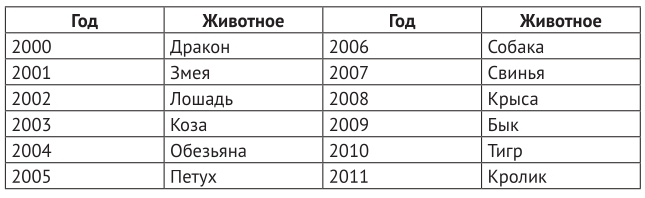

16. Китайский гороскоп. (в коде есть строки из следующих тем: "словари, циклы").
Условие:
Китайский гороскоп делит время на 12-летние циклы, и каждому году соответствует конкретное животное. Один из таких циклов приведен ниже:

После окончания одного цикла начинается другой, то есть 2012 год снова символизирует дракона.
Напишите программу, которая будет запрашивать у пользователя год рождения и выводить ассоциированное с ним название животного по китайскому гороскопу. При этом программа не должна ограничиваться только годами из приведенной таблицы, а должна корректно обрабатывать все годы нашей эры.
Код:
# ввод данных
entering_data = {
2000: "Дракон",
2001: "Змея",
2002: "Лошадь",
2003: "Коза",
2004: "Обезьяна",
2005: "Петух",
2006: "Собака",
2007: "Свинья",
2008: "Крыса",
2009: "Бык",
2010: "Тигр",
2011: "Кролик"
}
CIRCLE = 12
try:
year = int(input("%50s" % "Введите год: "))
if year in entering_data:
print("%49s" % "Это год:", entering_data[year])
else:
for a, b in zip(entering_data.keys(), entering_data.values()):
if (year - a) % CIRCLE == 0:
print("%49s" % "Это год:", b)
except:
print("%49s" % "При вводе допущена ошибка.")